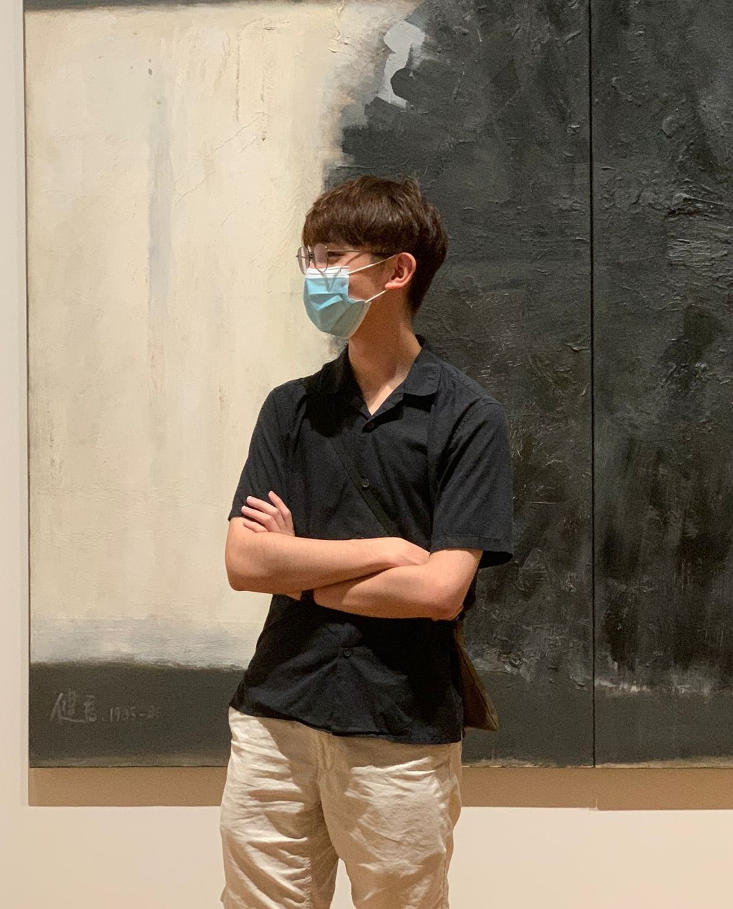

Harry is a tech enthusiast with a psychology background and industry experiences related to mental wellbeing of working adults. He is interested in cognitive science and social psychology, as well as the application of technology in psychological research/practices.

Harry is one of the most outstanding interns that I have worked with. Among all the projects he had participated in, he demonstrated his creative yet resilient mindset in front of others, which has always impressed me and the team. From innovating new ideas to putting things into practice, he has been critically thinking from all possible perspectives, making him a shining person among his peers. I wish he could continue develop both his soft and hard skills, and wish him all the best in his future endeavours.